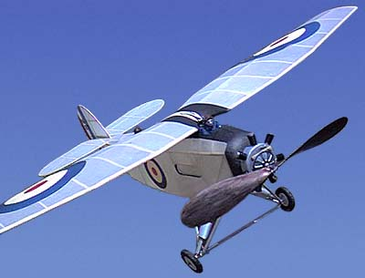
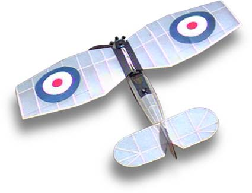

|
The Blackburn Airedale was a 3 seat reconisence plane designed by a Major F.A. Bumbpus in 1923. George built his model to a 23" span enlarged from a peanut plan. The nose is really too short for a rubber model, requiring a lot of ballast for balance. Fortunately, the wing is large enough to carry it, and this model floats about gracefully.
All covering is Japanese tissue. The markings are color photocopies that were sanded to reduce thickness and weight. The pilot and observer are carved foam. The wheels were turned from laminated balsa and ply. Peck Polymers supplied the engine cylinders. |
Copyright 1999, Thayer Syme. All rights reserved